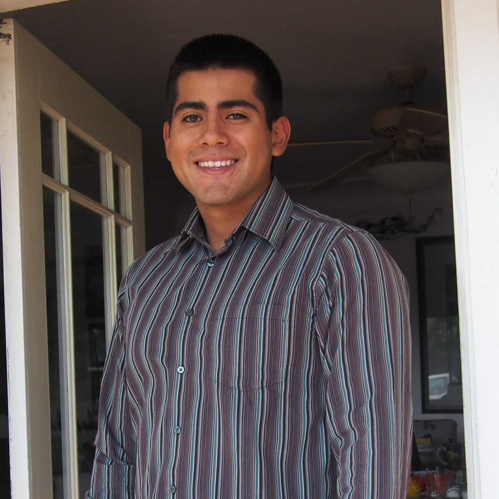

My Name Is Ruben Perez
I'm a computer engineering major from the University of California, Santa Cruz. Below are some of my projects that I have worked on both at my time in Santa Cruz and on my own.
I'm a computer engineering major from the University of California, Santa Cruz. Below are some of my projects that I have worked on both at my time in Santa Cruz and on my own.

This project is an independent passion project of mine. I began this project with the intent of making an affordable way to navigate row crop fields. I used an HSV mask to identify crops and drew a line down their center for my robot to follow. Everything was made from scratch, including the physical model. This project is ongoing as I try to make it reach an industrial level.

The trailing wagon is collaboration between me and a couple of classmates for our senior design project. It uses a stereo camera and ultrawide-band sensors to follow a person around. It's intended use is to carry heavy loads across worksites such as warehouses. I was in charge of the physcial prototype as well as making the gazebo simulations and CAD models.

The Webserver Robot was made for my club, Society of Professional Hispanic Engineers. I was the projects chair at the time and I found that participation at meetings had gone down since we had to switch to a remote setup. In order to increase engagement I made a robot that could be controlled from a website. I attached a camera and let club members do a scavanger hunt around my house with it.